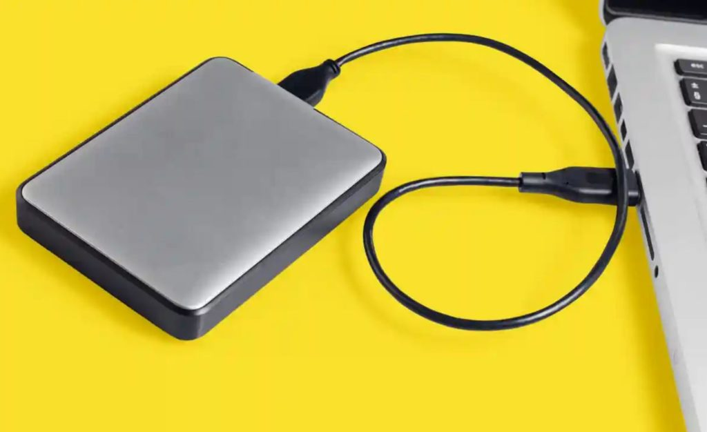

Un disco duro extraíble es una especie de periférico que se conecta a cualquier tipo de ordenador o dispositivo móvil que se tenga, es un elemento adicional de almacenamiento de datos muy útil para poder tener más capacidad al momento de almacenar archivos varios que ofrece al usuario la oportunidad de poder ser llevado a donde sea.
